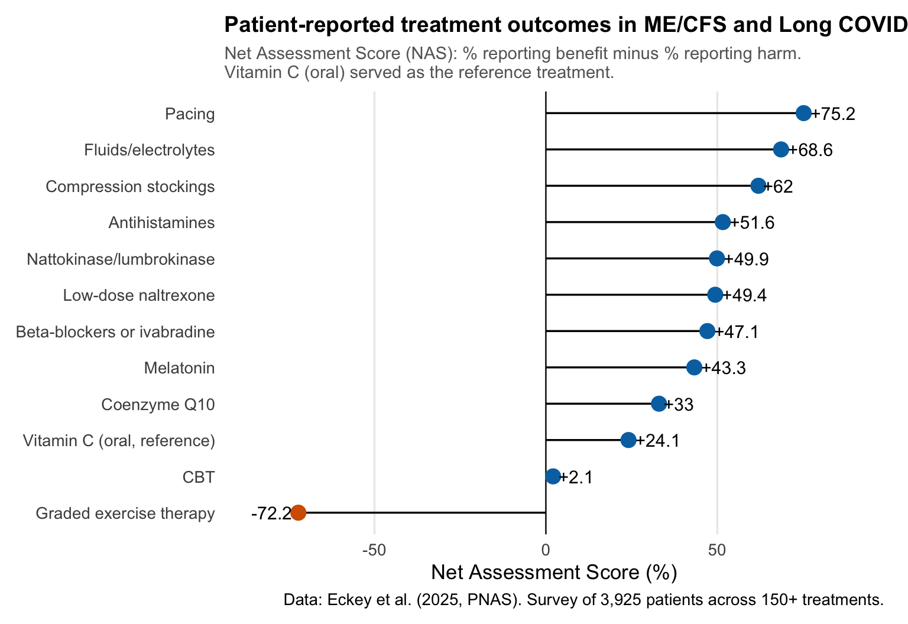
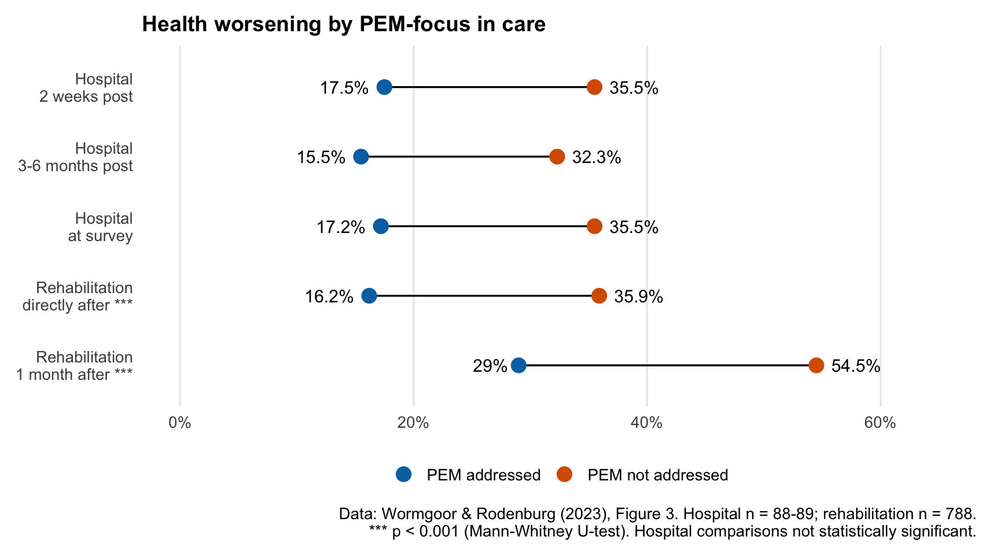

Norway’s New ME/CFS Guidelines Got It Backwards
The Norwegian Directorate of Health published draft guidelines for ME/CFS that recommend graded activity over pacing — the opposite of what NICE 2021 concluded and what the biomedical evidence supports. As a post-COVID patient and caretaker for someone with ME/CFS, I wrote a detailed consultation response. Here’s what the guidelines get wrong, why it matters, and how you can respond before the May 4th deadline.
In February 2026, the Norwegian Directorate of Health (Helsedirektoratet) published draft national guidelines for fatigue and ME/CFS. The consultation period is open until May 4th, 2026, and anyone can respond.
I’ve written a detailed consultation response, and I want to share both the response itself and the reasoning behind it. Because these guidelines, if implemented as drafted, risk real harm to patients.
I’ll be honest with you: this is personal. I’ve been on sick leave since January 2024 with post-COVID condition. I’ve written about that year and tracked my symptoms with data on this blog before. My wife lives with ME/CFS. I know this illness from both sides, as patient and as caretaker, and what I see in these guidelines worries me deeply.
What the guidelines recommend
The draft guideline covers assessment, treatment, and follow-up for patients with “utmattelse” (fatigue), prolonged fatigue, and ME/CFS. It uses the Canada Consensus Criteria for diagnosis, which is good.
But then it does something that undermines the whole thing: it explicitly states that the treatment recommendations do not distinguish between patients with prolonged fatigue and patients with ME/CFS.
“Retningslinjen skiller i utgangspunktet ikke mellom anbefalinger for pasienter med langvarig utmattelse og pasienter med ME/CFS”
(The guideline does not initially distinguish between recommendations for patients with prolonged fatigue and patients with ME/CFS)
This is like writing a guideline that doesn’t distinguish between a headache and a brain tumour because both involve head pain.
That’s the core problem.
ME/CFS is classified as a neurological disease (ICD-10 G93.3, ICD-11 8E49). Its defining feature is post-exertional malaise (PEM), a measurable, physiological worsening after exertion that can last days or weeks. Prolonged fatigue is a non-specific symptom with many different causes. These are not the same thing, and they don’t respond to the same treatments.
Under an umbrella term of “activity regulation,” the guideline presents graded activity as more effective than pacing. If you’re not familiar with the distinction: graded activity means progressively increasing your activity levels over time. Pacing means staying within your energy limits and stabilising before doing more.
For patients with PEM, graded activity is effectively graded exercise therapy (GET) under a different name. And GET is precisely what NICE 2021, the most rigorous evidence review of ME/CFS treatments ever conducted, recommended against.
Why this matters
The evidence here is not ambiguous.
Patient surveys consistently show that 50-74% of ME/CFS patients report worsening from GET. A recent survey of nearly 4,000 patients across 150+ treatments found that GET received the lowest patient-reported outcome score of all treatments studied, while pacing received the highest.

Norwegian survey data tells the same story. Among 660 Norwegian fatigue patients, only 20% of those meeting the strict Canada Criteria reported improvement from rehabilitation programmes, compared to 40% of patients meeting the broader Fukuda criteria. The stricter your ME/CFS definition, meaning the more certain you are that patients actually have PEM, the less effective these programmes are.
When PEM is not addressed in rehabilitation, over half of patients report their health worsening. When PEM is addressed, that number drops significantly.

And it’s not just about how patients feel. Post-COVID patients with PEM report only 55% recovery at three years, compared to 88% without PEM. PEM fundamentally changes the trajectory of illness.

What’s missing from the guidelines
The draft guideline contains no references to biomedical ME/CFS research. None. No immunology, no metabolomics, no exercise physiology, no muscle biopsy studies. The evidence base is drawn exclusively from the cognitive-behavioural research tradition.
This is a striking omission when you consider what’s been published:
- Muscle biopsies showing exercise triggers worsening of mitochondrial dysfunction and immune cell infiltration, with a review of skeletal muscle adaptations in PEM
- Two-day exercise tests demonstrating objective, measurable drops in work capacity on day two
- PET imaging showing neuroinflammation
- The NIH’s deep phenotyping study identifying brain, immune, and metabolic abnormalities.
- Norwegian researchers at Haukeland publishing on endothelial dysfunction in ME/CFS
The American Heart Association acknowledged in 2025 that conventional exercise prescription may not apply to patients with PEM. Evidence-based stratification of exercise by PEM status already exists. Yet the Norwegian guideline moves in the opposite direction.
The guideline states: “Erfaringer viser at kognitive teknikker kan være en hjelp i å fokusere mindre på PEM og andre symptomer” (Experiences show that cognitive techniques can help focus less on PEM and other symptoms).
PEM is an objective physiological response documented through muscle biopsies and exercise testing. Telling patients to “focus less” on PEM is like telling a diabetic to pay less attention to their blood glucose. The measurement reflects a real physiological state, and ignoring it makes the underlying process worse.
The guidelines also contain no discussion of harm from any recommended intervention. And they use “bør” (should), a strong normative recommendation, for interventions where their own GRADE assessments show LOW to VERY LOW confidence in the evidence. That’s not how GRADE methodology works.
How did it end up like this?
Given what I’ve laid out, you might wonder how the guidelines ended up leaning so heavily on the psychological approach while largely ignoring the biomedical research. It’s a fair question, and the answer is more structural than it is about any individual.
The so-called “biopsychosocial” approach to ME/CFS and post-COVID has real traction in Norway. Part of why it persists is that the narrative is intuitive: the idea that people can think or exercise their way out of illness is easier to grasp than the complex biomedical mechanisms involved. Most people, including many clinicians, don’t fully understand what PEM is or how it differs from ordinary fatigue or deconditioning. So a framework that says “gradually increase activity and maintain a positive outlook” sounds entirely reasonable, even compassionate.
The problem is that the biomedical evidence tells a different story, and the guideline doesn’t engage with it. When a guideline claims to be evidence-based but systematically excludes evidence that contradicts its approach, that’s a methodological problem, regardless of the intentions behind it.
As scientists, we all have hypotheses we’re attached to. That’s human. But part of the scientific process is updating our views when the evidence accumulates against them, and right now, there is a substantial body of research that these guidelines don’t address.
The problem with clinical impressions
There is a deeper structural issue here, and it’s worth naming explicitly: these guidelines lean heavily on clinical observations and recovery narratives rather than controlled research. This is a problem, because clinical impressions are subject to well-documented cognitive biases that make them unreliable as evidence, particularly in psychological and rehabilitation practice.
Survivorship bias is the most obvious one. Clinicians see the patients who come back and report improvement. They don’t see the ones who got worse and stopped attending, or who were too ill to return. The guideline’s use of recovery narratives as evidence is a textbook example: you interview people who say they recovered, and then conclude that recovery is possible through the strategies they used. The people who tried the same strategies and deteriorated are excluded by design.
Confirmation bias reinforces this. If a clinician believes that graded activity helps, they will notice and remember the patients who improved and attribute it to the intervention. Patients who worsened may be interpreted as “not engaging properly” or “lacking motivation” rather than as evidence that the intervention itself is harmful. The guideline’s emphasis on “belief in recovery” as essential fits this pattern perfectly: if a patient doesn’t improve, the framework attributes it to insufficient belief rather than questioning the intervention.
Illusory correlation means clinicians can perceive a relationship between their intervention and patient outcomes even when none exists. In a condition with natural fluctuation like ME/CFS, some patients may improve regardless of what treatment they receive. Without a control group, any improvement gets attributed to whatever the clinician did.
Regression to the mean is closely related. Patients tend to seek help when they’re at their worst. Any subsequent measurement will likely show improvement, simply because extreme states tend to move back toward the average. This is why we have randomised controlled trials: to separate real treatment effects from statistical artefacts.
And then there is the broken feedback loop. In most therapeutic settings, and especially in rehabilitation, clinicians don’t follow up with patients after treatment ends. They see a patient for a defined period, deliver the intervention, and the patient leaves. If the patient improves, great. If the patient gets worse months later because the programme pushed them past their physiological limits, the clinician never hears about it. Patients who discontinue treatment because it isn’t working, or because it’s actively making them worse, simply disappear from the clinician’s view. They don’t come back to say “this harmed me.” They’re too ill, or they’ve lost trust in the system, or they’ve been told their worsening is due to not trying hard enough.
The result is that clinicians operate in an information vacuum where the only outcomes they ever see are the positive ones. This isn’t malice. It’s a structural problem. But it means that clinical impressions from these settings are systematically biased toward overestimating benefit and underestimating harm.
These biases are not hypothetical. They are precisely why evidence-based medicine exists: to protect patients from interventions that seem effective to clinicians but fail rigorous testing. The history of medicine is full of treatments that clinicians swore by based on their clinical experience, only to be abandoned when properly evaluated.
The irony is that the guideline claims to follow GRADE methodology, a framework designed specifically to prioritise controlled evidence over clinical opinion. But when the controlled evidence (NICE 2021) contradicts the clinical narrative, the guideline follows the narrative.
My experience
I don’t want to make this just about data, because the data represents real people.
In January 2024, I became bedbound with fatigue, brain fog, and pain. A shower would send my heart rate to 140 bpm and take three days to recover from. From February to June, there was minimal improvement.
The turning point came when my wife found research on intensive pacing with 30-second breaks. Not graded activity, but the opposite: doing less to get better. After eight weeks at Godthaab Rehabilitation Centre with structured pacing as the core principle, I progressed from fewer than 1,000 daily steps with difficulty to about 2,000 with ease.
But every single time I exceed my capacity, a trip to the post office, a vet visit, things most people wouldn’t think twice about, it cost me weeks of hard-won progress. This is not deconditioning. It is not a lack of belief in recovery. It is a physiological response I can measure in my heart rate data. I’ve explored this data in depth using PCA and clustering analysis of my symptom tracking, and the patterns are clear.
The guidelines recommend the opposite of what helped me.
The consultation response
I’ve written a detailed, referenced consultation response covering all of this. You can download the full consultation response (PDF)
The response covers:
- The scope conflation problem: why ME/CFS and general fatigue need separate treatment recommendations
- The missing biomedical evidence: what the published research actually shows about the biology of ME/CFS
- PEM as a physiological response: why telling patients to “focus less” on PEM is like telling a diabetic to ignore their blood glucose
- Graded activity vs. pacing: what the evidence actually says, including Norwegian data
- Evidence quality: why low-confidence evidence shouldn’t produce strong recommendations
- What the guidelines should include: stratified exercise recommendations based on PEM status, harm reporting, and alignment with NICE 2021
How to respond
The consultation period is open until May 4th, 2026. Anyone can submit a response, you don’t need to be a healthcare professional or a Norwegian citizen. If you are affected by ME/CFS or long COVID, your voice matters in this process.
You can find the draft guidelines and submission form on Helsedirektoratet’s website.
If you want to use my response as a starting point or reference, please do. The more people who respond with evidence-based concerns, the harder it becomes to ignore the science.
2026-norways-new-me/cfs-guidelines-got-it-backwards,
author = "Dr. Mowinckel",
title = "Norway's New ME/CFS Guidelines Got It Backwards",
url = "https://drmowinckels.io/blog/2026/mecfs-guidelines-norway/",
year = 2026,
doi = "https://www.doi.org/10.5281/zenodo.19369483",
updated = "Apr 1, 2026"
}